本节汇集并组织 Nuke (.Nk) 在整个帮助中提供给您的脚本，以确保您可以轻松访问它们。下面的视频解释了如何将脚本放入 Nuke 如果脚本链接被禁用，以及如何下载更复杂的示例。
的 蓝色 脚本链接允许你直接将脚本加载到 Nuke 中，但是有几个设置步骤。如果你只想显示一个脚本来手动复制/粘贴到 Nuke 中，点击 按钮。此外，一些脚本和示例可以直接下载。
注意:
加载示例脚本仅在您从启动帮助时有效
Nuke
并设置
文档来源
到
本地
在
行为
>
文档
标签的
偏好
.
请参阅
使用脚本链接
欲了解更多信息。
此帮助中脚本的自动链接仅在 Nuke 和帮助文件联系在一起的 HelpCommandRequestHander 。要启用链接:
| 1。 | 启动 Nuke . |
| 2. | 导航到 偏好 > 行为 > 文档 选项卡并选择 源 > 本地 . |
| 3. | 将节点添加到节点图中，然后单击 ? 在节点的 属性 面板。 |
将显示该节点的帮助。
| 4. | 导航到 Nuke 脚本示例 在屏幕左侧的帮助目录中。 |
| 5. | 单击所需链接，将脚本自动加载到 Nuke 会话。 |
注意: 如果关闭 Nuke 或 help，该会话链接将断开，必须重新建立。
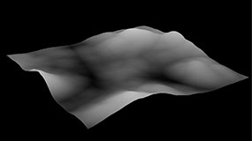
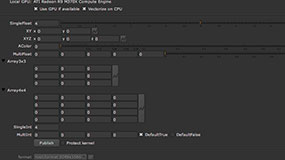
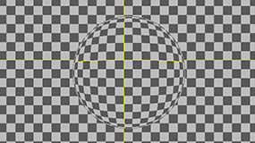
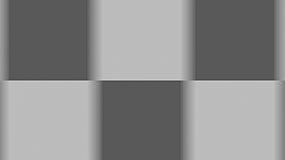
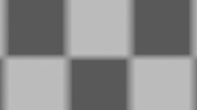
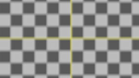
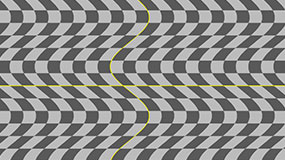
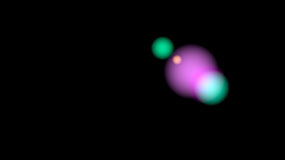
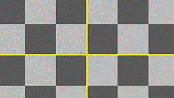
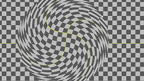
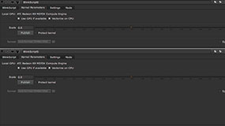
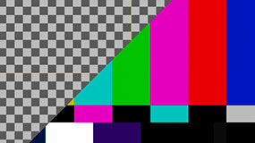
|
|